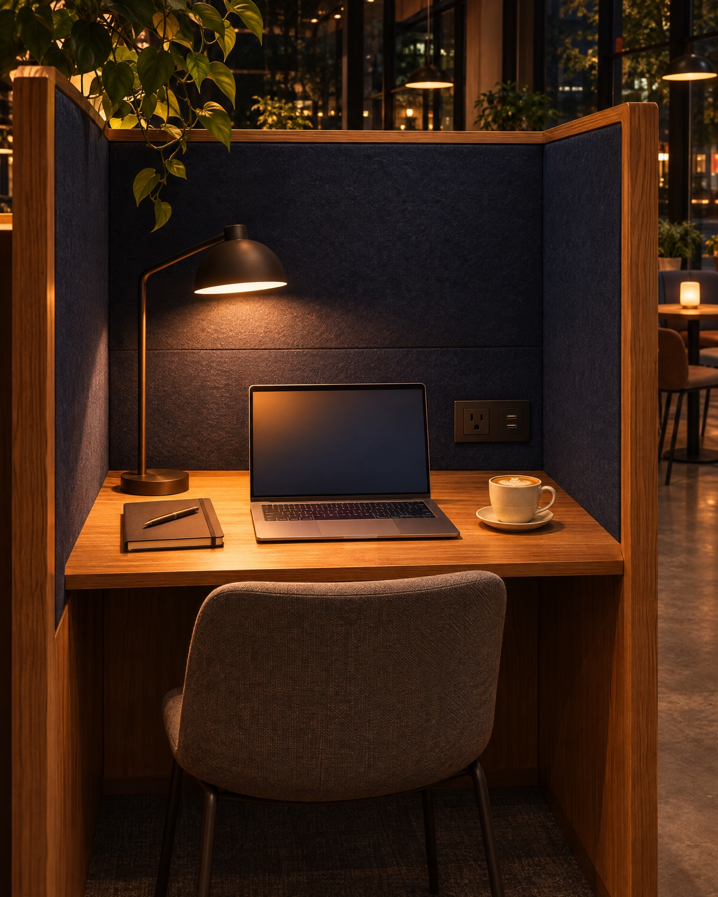
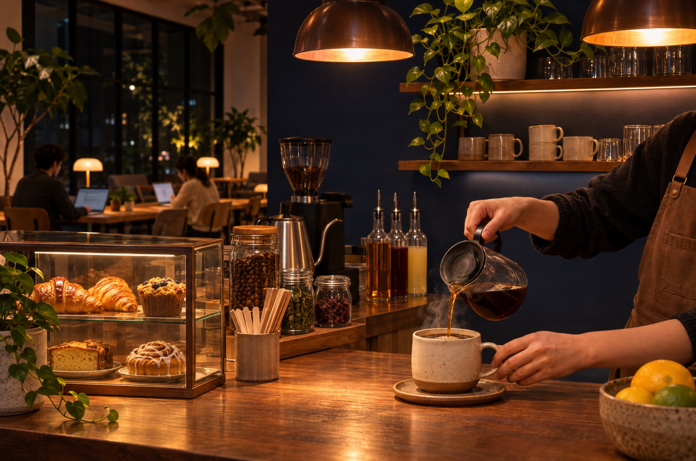

渋谷駅 徒歩4分｜毎日 10:00〜24:00
仕事帰りの、もうひと頑張りに。
カフェが閉まっても、家ではくつろいでしまっても。
24時まで、集中できる席があります。
いまは 19:42
24時まで、あと 4時間18分 集中できます。
SCENE
こんな夜に、どうぞ。
19:30
資格の勉強を、毎日1時間
決まった席に座るだけで、勉強の時間がつくれます。
20:00
副業の作業を、まとめて
電源とWi-Fiは全席に。ワークブースならオンライン会議も。
22:00
明日の準備を、静かに
夜は照明を少し落として、落ち着いた空気に切り替えます。

SPACE
集中のための、
ちょうどいい設備
- 全席 電源・高速Wi-Fi1Gbpsの光回線。重い資料もすぐに。
- ワークブース 8席通話OK。オンライン会議や面談に。
- ドリンク飲み放題コーヒー・お茶・夜はノンカフェインも。
- 会話禁止の静かな席フロアの半分は、話さない席です。
PRICE
使った分だけ。
夜はもっとお得に。
ドロップイン
250円／30分
予約なしで、ふらっと。1日の上限 1,800円
いちばん人気
ナイトパック
1,200円
19:00〜24:00 使い放題・ドリンクつき
ナイト会員
8,800円／月
平日 18:00〜24:00 何度でも
※料金はサンプルです（税込表示の例）。ワークブースは30分＋100円。

CAFE
一杯のコーヒーで、
スイッチを入れる。
21時以降は、眠りをじゃましないノンカフェインのお茶も用意しています。
ACCESS
駅から4分。
帰り道の途中に。
- 営業時間
- 毎日 10:00〜24:00（最終入店 23:00）
- 住所
- 東京都渋谷区〇〇 1-2-3 YORUビル 2F（架空）
- アクセス
- 渋谷駅 東口から歩いて4分
- 席数
- オープン席 32席／ワークブース 8席
- お支払い
- クレジットカード、交通系IC、QRコード決済
Q&A
よくある質問
予約しないと使えませんか？
ドロップインとナイトパックは予約なしで使えます。ワークブースだけ、アプリから予約もできます。
食べ物を持ち込んでもいいですか？
においの少ない軽食なら大丈夫です。カウンターでも焼き菓子を販売しています。
一人でも気まずくないですか？
ほとんどの方がお一人です。話さない席もあるので、黙々と作業できます。